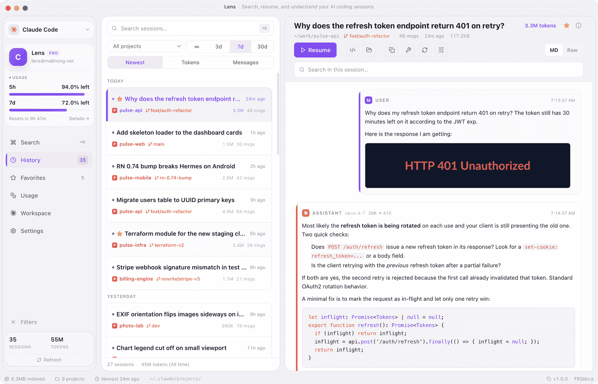
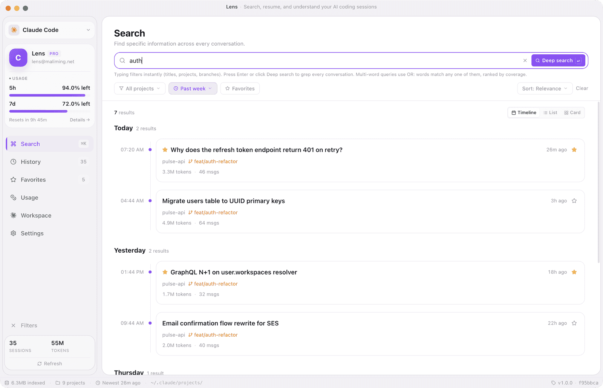
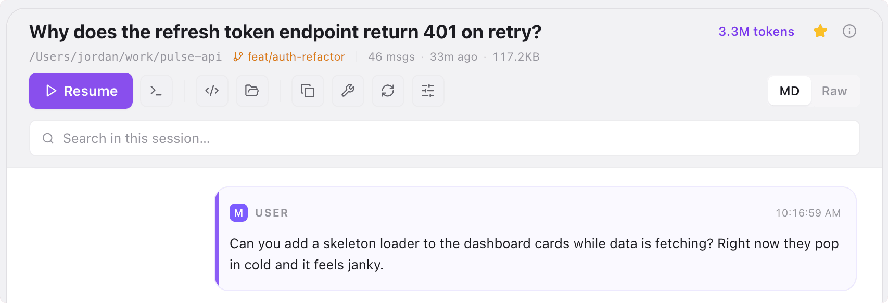
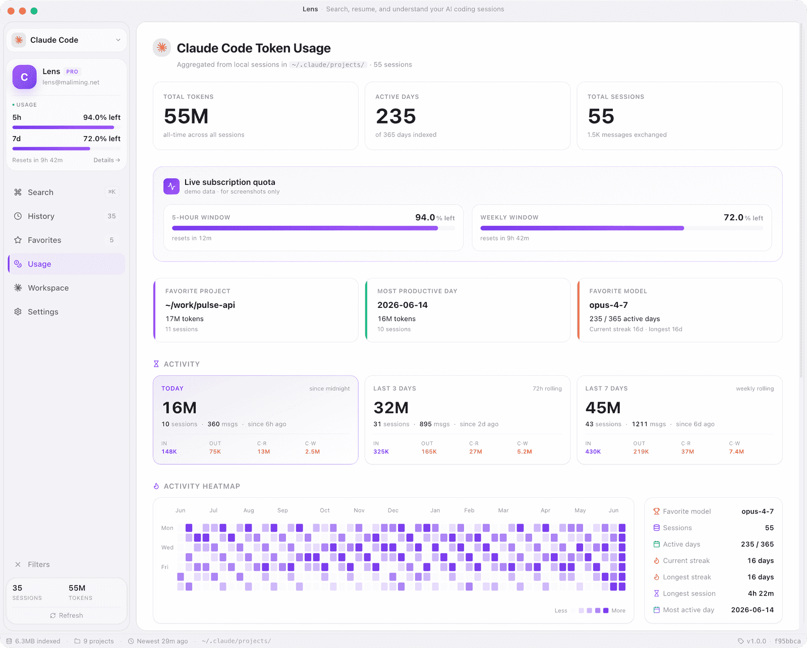
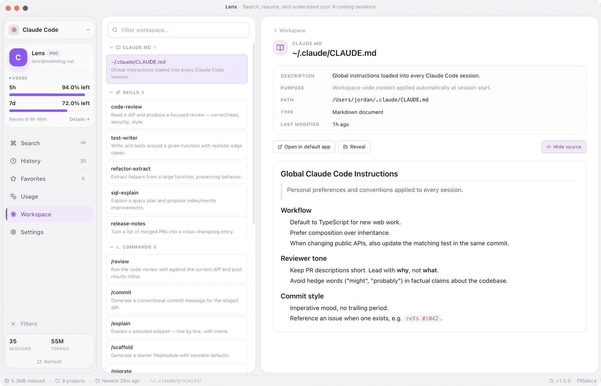
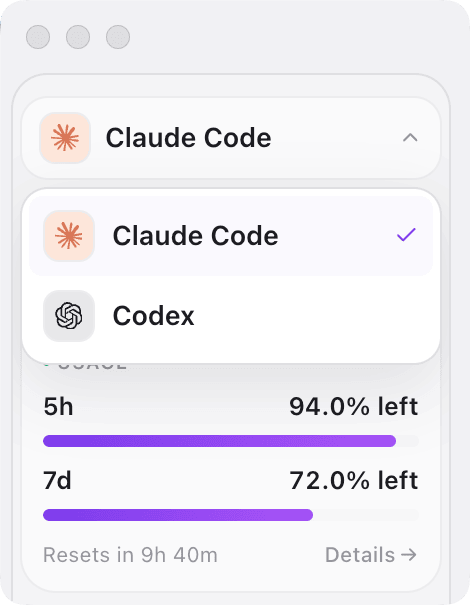
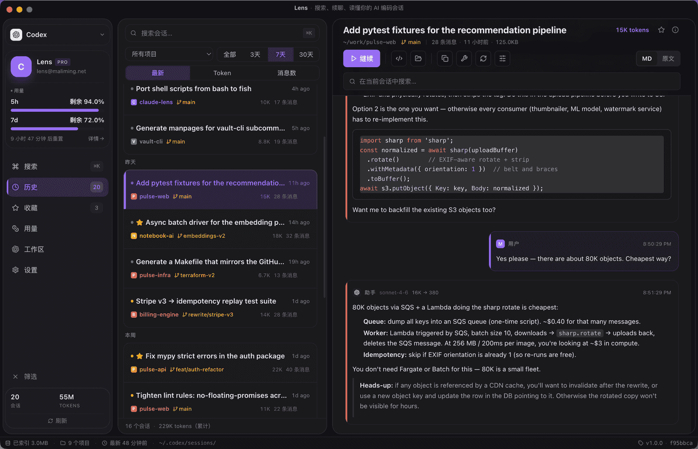

Click anywhere or press Esc to close
Lens is a cross-platform desktop browser for the two AI coding tools you actually use. Search, resume, and understand every conversation Claude Code and OpenAI Codex write to disk — without ever leaving your machine.

Claude Code and Codex stash every conversation as JSONL under
~/.claude/projects/ and ~/.codex/sessions/.
After a few weeks of heavy use, the problems compound:
Six things you'll use every day — without ever opening a terminal to grep your JSONL files.
Instant filter on title, project, branch, or model. When metadata isn't enough, drop into full-text grep across every JSONL body.

Open the session in Terminal or iTerm at the original cwd, or copy the resume command to your clipboard.
cd-ing into the right repo firstclaude --resume and codex resume
Per-tool dashboards with rolling 5h / 24h / 7d / 30d buckets — broken down by model and project, with an activity heatmap and streak stats.
codex app-server probe (no consent needed)
Browse CLAUDE.md, AGENTS.md, Skills, Commands, Hooks/Rules, Plugins, and Settings — everything that shapes how the agent behaves, in one view.

Flip between Claude Code and Codex from the sidebar. Sessions, usage charts, workspace browser, plan badge — everything rescopes to the active source.

Anthropic's CLI for coding. Lens reads every JSONL it writes, surfaces the Anthropic OAuth quota, and resumes sessions via claude --resume.
OpenAI's terminal coding agent. Lens parses its rollout files, pulls live limits from codex app-server, and resumes via codex resume.
System theme detection on first launch. Switch any time. Localized into ten languages — auto-detected from your OS.

Free, open source (MIT), 100% local. macOS, Windows, and Linux.